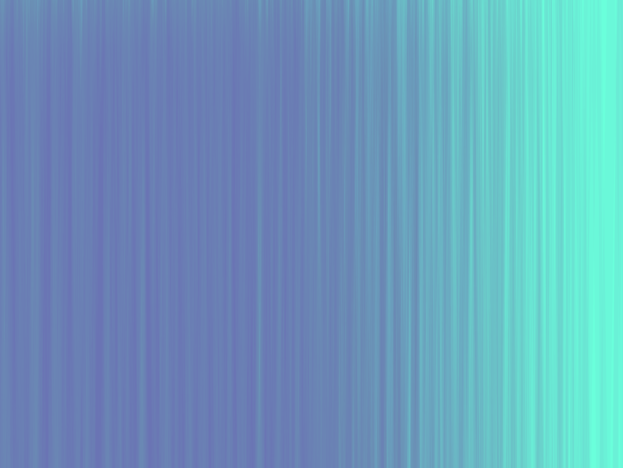
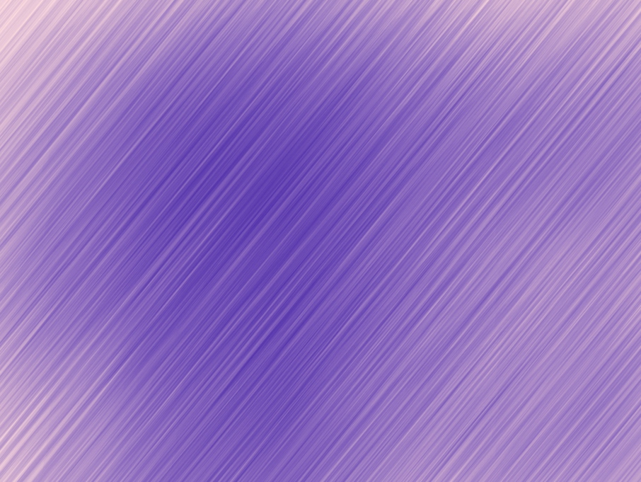

Ascetic nature was a project for Software Art class at NYU Abu Dhabi. I created a series of 3 still images inspired from nature. What started as an initial idea to recreate grass ended up being an exploration of natural elements with digital art, as playing with colors, size of the shapes, their position and rotation brought a whole new perspective.
The series of the 3 images is called ascetic nature, as each piece represents some phenomenon of nature, yet in a rather minimalistic way where a lot of emphasis has been put on colors.
transitions
twilight rainfall
wheat field in moonlight
All images were created with the same code, however, each image is different from each other because of different parameters that have been altered. I used GUI sliders to change the color, number and size of shapes, their position and rotation.
Built with: OpenFrameworks
This project was exhibited in the exhibition space The Cube at NYU Abu Dhabi in 2017.